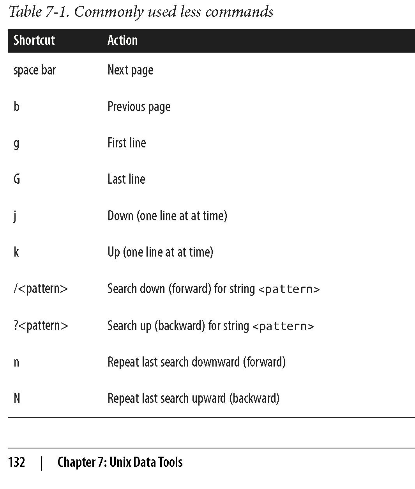
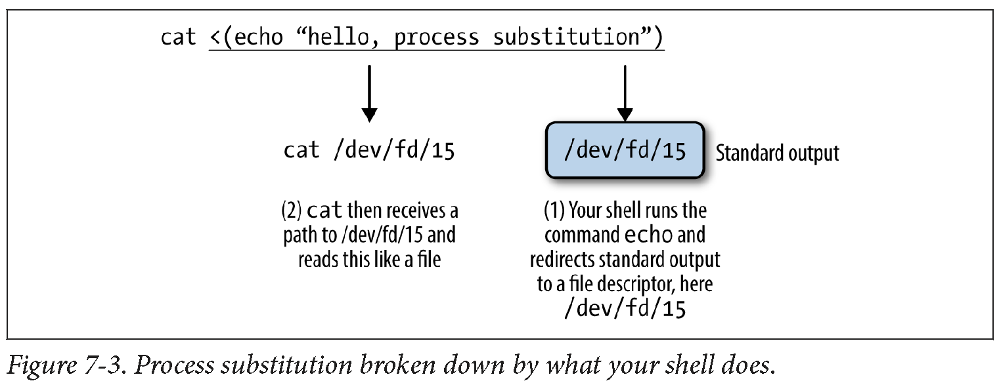

Unix Data Tools
Overview
Teaching: 50 min
Exercises: 10 minQuestions
How do I download and check data?
How to inspect data?
How to view data in Unix?
How to obtain data summary information of my data?
How do I select specific columns from my dataset?
How do I find patterns in my data?
How do I edit data streams?
Objectives
To be able to download data in Unix.
To be able to inspect and view data in Unix.
To be able to select specific columns in the data files.
To be able to find specific patterns in the data.
To be able to edit data streams.
Note: The lesson is based on Chapters 6 and 7 of the Bioinformatics Data Skills by Vince Buffalo
Bioinformatic data
Retrieving bioinformatic data
Downloading Data with wget and curl
Two common command-line programs for downloading data from the Web are
wget and curl.
If they are not installed on your system, you’ll have to install them
with a package manager (e.g., Homebrew or apt-get). While curl and wget
are similar in basic functionality, their relative strengths are different:
wgetis useful for quickly downloading a file from the command linecurlis used in scripts that send data to a system or recieve data through a variate of protocols, including SFTP and SCP.
To get a file with data for human chromosome 22 from the GRCh37 (also known as hg19) assembly version:
wget http://hgdownload.soe.ucsc.edu/goldenPath/hg19/chromosomes/chr22.fa.gz
Notice that the link to chromosome 22 begins with “http” (short for Hyper‐Text Transfer Protocol).
wget can also handle FTP links (which start with “ftp,” short for File Transfer Protocol).
In general, FTP is preferable to HTTP for large files (and is often recommended by websites like
the UCSC Genome Browser).
To download chromosome 22 with curl, we’d use:
curl http://hgdownload.soe.ucsc.edu/goldenPath/hg19/chromosomes/chr22.fa.gz > chr22.fa.gz
Data Integrity
Data we download into our project directory is the starting point of all future analyses and conclusions. So it’s important to explicitly check the transferred data’s integrity with check‐sums. Checksums are very compressed summaries of data, computed in a way that even if just one bit of the data is changed, the checksum will be different. As such data integrity checks are also helpful in keeping track of data versions. Checksums facilitate reproducibility, as we can link a particular analysis and set of results to an exact version of data summarized by the data’s checksum value.
SHA and MD5 Checksums
The two most common checksum algorithms are MD5 and SHA-1. SHA-1 is newer and generally preferred. However, MD5 is more common; it’s likely to be what you encounter if a server has precomputed checksums on a set of files. To create checksums using SHA-1 we can pass arbitrary strings to the program shasum (on some systems, it’s sha1sum) through standard in:
echo "bioinformatics is fun" | shasum
echo "bioinformatic is fun" | shasum
f9b70d0d1b0a55263f1b012adab6abf572e3030b -
e7f33eedcfdc9aef8a9b4fec07e58f0cf292aa67 -
Checksums are reported in hexadecimal format, where each digit can be one of 16 characters: digits 0 through 9, and the letters a, b, c, d, e, and f. The trailing dash indicates this is the SHA-1 checksum of input from standard in.
We can also use checksums with file input:
shasum chr22.fa.gz
d012edd46f50d674380460d3b4e91f450688e756 chr22.fa.gz
Because it can get rather tedious to check each checksum individually shasum has a convenient
solution: it can create and validate against a file containing the checksums of files. We can
create a SHA-1 checksum file for all FASTQ files in the data/ directory as follows:
shasum data/*fastq > fastq_checksums.sha
Then, we can use shasum’s check option (-c) to validate that these files match the original versions:
shasum -c fastq_checksums.sha
The program md5sum (or md5 on OS X) calculates MD5 hashes and is similar in operation to shasum.
However, note that on OS X, the md5 command doesn’t have the -c option, so you’ll need to install the
GNU version for this option.
Keeping records
When we download data from the internet, it’s important to include checksum numbers in a README.md file for reproducibility, e.g.,
Genome and Annotation Data
Mouse (Mus musculus) reference genome version GRCm38 (Ensembl release 74) was downloaded on Sat Feb 22 21:24:42 PST 2014, using: wget ftp://ftp.ensembl.org/pub/release-74/fasta/mus_musculus/dna/Mus_musculus.GRCm38.74.dna.toplevel.fa.gz Gene annotation data (also Ensembl release 74) was downloaded from Ensembl on Sat Feb 22 23:30:27 PST 2014, using: wget ftp://ftp.ensembl.org/pub/release-74/fasta/mus_musculus/dna/Mus_musculus.GRCm38.74.gtf.gz ## SHA-1 Sums -
Mus_musculus.GRCm38.74.dna.toplevel.fa.gz: 01c868e22a9815c[…]c2154c20ae7899c5f -Mus_musculus.GRCm38.74.gtf.gz: cf5bb5f8bda2803[…]708bff59cb575e379Although this isn’t a lot of documentation, this is infinitely better than not documenting how data was acquired. As this example demonstrates, it takes very little effort to properly track the data that enters your project, and thereby ensure reproducibility. The most important step in documenting your work is that you’re consistent and make it a habit.
Unix data tools
Inspecting and Manipulating Text Data with Unix Tools

In this lesson, we’ll learn how to use core Unix tools to manipulate and explore plain-text data formats. The most common tabular plain-text file format used in bioinformatics is tab-delimited. Many Unix tools assume tab-delimited file format by default. Such format is also simple to parse with scripting languages like Python and Perl, and easy to load into R.
Tabular Plain-Text Data Formats
The basic tabular data format is incredibly simple: each row (also known as a record) is kept on its own line, and each column (also known as a field) is separated by some delimiter. There are three flavors you will encounter: tab-delimited, comma-separated, and variable space-delimited. Of these three formats, tab-delimited is the most commonly used in bioinformatics. File formats such as BED, GTF/GFF, SAM, tabular BLAST output, and VCF are all examples of tab-delimited files. Columns of a tab-delimited file are separated by a single tab character (which has the escape code \t). A common convention (but not a standard) is to include metadata on the first few lines of a tab-delimited file. These metadata lines begin with # to differentiate them from the tabular data records. Because tab-delimited files use a tab to delimit columns, tabs in data are not allowed. In general, tab-delimited formats and CSV are better choices than space-delimited formats because it’s quite common to encounter data containing spaces.
Despite the simplicity of tabular data formats, there’s one major common headache: how lines are separated. Linux and OS X use a single linefeed character (with the escape code \n) to separate lines, while Windows uses a DOS-style line separator of a carriage return and a linefeed character (\r\n). CSV files generally use this DOS-style too, as this is specified in the CSV specification RFC-4180 (which in practice is loosely followed). Occasionally, you might encounter files separated by only carriage returns.
In this lesson, we’ll work with very simple genomic feature formats: BED (Browser Extensible Data) and GTF (Gene Transfer Format) files. These file formats store the positions of features such as genes, exons, and variants in tab-delimited format. Don’t worry too much about the specifics of these formats; our goal here is to develop the skills to freely manipulate plain-text files or streams using Unix data tools.
Inspecting Data with head and tail
Although we can print the content of a file on screen with cat, a better option is to take a look
at the top of a file with head and at the bottom of the file with tail. First, download the file
Mus_musculus.GRCm38.75_chr1.bed (we downloaded them already when we cloned the bds-files repository):
curl -O https://raw.githubusercontent.com/Data-Skills/bds-files/master/chapter-07-unix-data-tools/Mus_musculus.GRCm38.75_chr1.bed
curl -O https://raw.githubusercontent.com/Data-Skills/bds-files/master/chapter-07-unix-data-tools/Mus_musculus.GRCm38.75_chr1.gtf
Now look at it with head:
head -n 3 Mus_musculus.GRCm38.75_chr1.bed
1 3054233 3054733
1 3054233 3054733
1 3054233 3054733
The -n argument controls how many lines to display (the default is 10).
head has a related command designed to look at the end, or tail of a file:
tail -n 3 Mus_musculus.GRCm38.75_chr1.bed
1 195240910 195241007
1 195240910 195241007
1 195240910 195241007
One common use of tail is to remove the header of a file. If -n is given a number x
preceded with a + sign (e.g., +x), tail will start from the xth line. So to chop off a
header, we start from the second line with -n +2. Here, we’ll use the command seq to
generate a file of 3 numbers, and chop of the first line:
seq 3 > nums.txt
cat nums.txt
echo "---"
tail -n +2 nums.txt
1
2
3
---
2
3
Sometimes it’s useful to see both the beginning and end of a file. Foor example, if we have a sorted BED file and we want to see the positions of the first feature and last feature. We can do this using Unix subshell, the topic we’ll cover later:
(head -n 2; tail -n 2) < Mus_musculus.GRCm38.75_chr1.bed
1 3054233 3054733
1 3054233 3054733
1 195240910 195241007
1 195240910 195241007
We can create even a short‐cut for this command in your shell configuration file, which is either ~/.bashrc or ~/.profile:
# inspect the first and last 3 lines of a file
i() { (head -n 2; tail -n 2) < "$1" | column -t}
head is also useful for taking a peek at data resulting from a Unix pipeline:
grep 'gene_id "ENSMUSG00000025907"' Mus_musculus.GRCm38.75_chr1.gtf | head -n 1
1 protein_coding gene 6206197 6276648 . + . gene_id "ENSMUSG00000025907"; gene_name "Rb1cc1"; gene_source "ensembl_havana"; gene_biotype "protein_coding";
After printing the first few rows of your data the head process exits. When it exits, the shell sends a signal to other programs in the pipe called SIGPIPE, much like the signal that’s sent when you press Control-c (that signal is SIGINT) that terminates them as well. When building complex pipelines that process large amounts of data, this is extremely important feature.
Viewing data with less
less is a terminal pager, a program that allows us to view large amounts of
text in our terminals by scrolling through long files and standard output a
screen at a time. Once we start less, it will stay open until we quit it by
pressing q. Some other commands in less are listed in the table below:

Challenge 1
Let’s look at a file called contaminated.fastq in the book’s GitHub repository. Use less to get a quick sense of whether there are 3’ adapter contaminants in the contaminated.fastq file. We’ll look for AGATCGGAAGAGCACACGTCTGAACTCCAGTCAC (a known adapter from the Illumina Tru‐ Seq® kit1). Instead of trying to find the complete sequence, let’s search for the first 11 bases, AGATCGGAAGA.
- What less commad will you use to search for this sequence?
- Are the sequences contaminated?
less is also extremely useful in debugging our command-line pipelines. You can
pipe the output of the command you want to debug to less and comment out everything
after. When you run the pipe, less will capture the output of the last command and
pause so you can inspect it.
less is also crucial when iteratively building up a pipeline. Suppose we have an
imaginary pipeline that involves three programs, step1, step2, and step3. Our
finished pipeline will look like
step1 input.txt | step2 | step3 > output.txt. But we may want to build it up in
pieces, checking the output of each step. The natural way to do this is with less:
step1 input.txt | less # inspect output in less
step1 input.txt | step2 | less
step1 input.txt | step2 | step3 | less
A useful behavior of pipes is that the execution of a program with output piped to
less will be paused when less has a full screen of data. The result is that we
can throw less after a complex pipe processing large data and not worry about wasting
computing power: the pipe will block and we can spend as much time as needed to inspect
the output.
Obtaining plain-Text Data Summary Information with wc, ls, and awk
In addition to peeking at a file with head, tail, or less, we may want other
bits of summary information about a plain-text data file like the number of rows or
columns. With plain-text data formats like tab-delimited and CSV files, the number
of rows is usually the number of lines. We can retrieve this with the program wc (for word count):
wc ../data/Mus_musculus.GRCm38.75_chr1.bed
81226 243678 1698545 ../data/Mus_musculus.GRCm38.75_chr1.bed
By default, wc outputs the number of words, lines, and characters of the supplied file. Often, we only care about the number of lines. We can use option -l to just return the number of lines:
wc -l ../data/Mus_musculus.GRCm38.75_chr1.bed
81226 ../data/Mus_musculus.GRCm38.75_chr1.bed
Another bit of information we usually want about a file is its size. The easiest way to do this is
with our old Unix friend, ls, with the -lh option (l for long, h for human-readable:
ls -lh ../data/Mus_musculus.GRCm38.75_chr1.bed
-rw-r--r-- 1 dlavrov staff 1.6M Mar 6 06:35 ../data/Mus_musculus.GRCm38.75_chr1.bed
Challenge 2
Let’s look at two files we downloaded earlier, Mus_musculus.GRCm38.75_chr1.gtf and Mus_musculus.GRCm38.75_chr1.bed.
- What are the sizes of these files?
- How many lines they contain?
Note that “M” in ls -lh output indicates megabytes; “G” – gigabytes.
Finding the number of columns with awk
There’s one other bit of information we often want about a file: how many columns it contains.
We could always manually count the number of columns of the first row with head -n 1, but a far
easier way is to use awk. Awk is an easy, small programming language great at working with
text data like TSV and CSV files. We’ll see more of `awk later, but let’s use an awk one-liner
to return how many fields a file contains:
awk -F "\t" '{print NF; exit}' ../data/Mus_musculus.GRCm38.75_chr1.bed
3
awk was designed for tabular plain-text data processing, and
has a built-in variable NF set to the number of fields of the current dataset.
This awk oneliner simply prints the number of fields of the first row
of the Mus_musculus.GRCm38.75_chr1.bed file, and then exits. By default, awk
treats white‐space (tabs and spaces) as the field separator, but we changed
this to just tabs by setting the -F argument of awk.
Finding how many columns there are in Mus_musculus.GRCm38.75_chr1.gtf is a bit trickier because this file has a series of comments in the beginning (marked with #) that contain helpful metadata like the genome build, version, date, and accession number. One way to fix this is with a tail trick we saw earlier:
tail -n +6 ../data/Mus_musculus.GRCm38.75_chr1.gtf | head -n 1;
echo "---"
tail -n +6 ../data/Mus_musculus.GRCm38.75_chr1.gtf | awk -F "\t" '{print NF; exit}'
1 pseudogene gene 3054233 3054733 . + . gene_id "ENSMUSG00000090025"; gene_name "Gm16088"; gene_source "havana"; gene_biotype "pseudogene";
---
9
A better solution would be to simply exclude all lines that match a comment line pattern. Using the program grep (which we’ll talk more about it later), we can easily exclude lines that begin with “#”:
grep -v "^#" ../data/Mus_musculus.GRCm38.75_chr1.gtf | awk -F "\t" '{print NF; exit}'
9
Working with Column Data with cut and column
There is another useful program for working with plain-text tabular data formats: cut.
Cut cuts out specified columns (also known as fields) from a text file. By default,
cut treats tabs as the delimiters, so to extract the second column we use:
cut -f 2 ../data/Mus_musculus.GRCm38.75_chr1.bed | head -n 3
3054233
3054233
3054233
The -f argument is how we specify which columns to keep. The argument -f also allows
us to specify ranges of columns (e.g., -f 3-8) and sets of columns (e.g., -f 3,5,8).
Note that it’s not possible to reorder columns using using cut (e.g., -f 6,5,4,3 will
not work, unfortunately). But you can use awk -v OFS="\t" '{ print $6,$5,$4,$3 }'
(see extra topics for more info).
Challenge 3
Use cut to convert our GTF for Mus_musculus.GRCm38.75_chr1.gtf to a three-column tab-delimited file of genomic ranges (e.g., chromosome, start, and end position). Note that although our three-column file of genomic positions looks like a BED-formatted file, it’s not due to subtle differences in genomic range formats. We’ll learn more about this later.
Formatting Tabular Data with column
As you may have noticed when working with tab-delimited files, it’s not always easy to see which elements belong to a particular column. For example:
grep -v "^#" ../data/Mus_musculus.GRCm38.75_chr1.gtf | cut -f1-8 | head -n 3
1 pseudogene gene 3054233 3054733 . + .
1 unprocessed_pseudogene transcript 3054233 3054733 . + .
1 unprocessed_pseudogene exon 3054233 3054733 . + .
While tabs are a terrific delimiter in plain-text data files, our variable width data leads our
columns to not stack up well. There’s a fix for this in Unix: program column -t (the -t option
tells column to treat data as a table). column -t produces neat columns that are much easier to
read:
grep -v "^#" ../data/Mus_musculus.GRCm38.75_chr1.gtf | cut -f1-8 | column -t | head -n 3
1 pseudogene gene 3054233 3054733 . + .
1 unprocessed_pseudogene transcript 3054233 3054733 . + .
1 unprocessed_pseudogene exon 3054233 3054733 . + .
Note that you should only use columnt -t to visualize data in the terminal, not to reformat data
to write to a file. Tab-delimited data is preferable to data delimited by a variable number of spaces,
since it’s easier for programs to parse.
Like cut, column’s default delimiter is the tab character (\t). We can specify a different delimiter with the -s option.
column illustrates an important point about how we should treat data:
there’s no reason to make data formats attractive at the expense of readable
by programs. This relates to the general recommendation: “write code for
humans, write data for computers”. In general, it’s easier to make computer-
readable data attractive to humans than it is to make data in a human-friendly
format readable to a computer.
Finding patterns with grep
grep finds a pattern (fixed string or regular expression) in a file and is faster than
any other searches you can do in other programs/languages. grep requires two arguments:
the pattern (the string or basic regular expression you want to search for), and the file
(or files) to search for it in. As a very simple example, let’s use grep to find a gene,
“Olfr418-ps1,” in the file Mus_musculus.GRCm38.75_chr1_genes.txt (which contains all Ensembl
gene identifiers and gene names for all protein-coding genes on chromosome 1):
grep "Olfr418-ps1" ../data/Mus_musculus.GRCm38.75_chr1_genes.txt
ENSMUSG00000049605 Olfr418-ps1
Note that although the quotes around the pattern aren’t required, it’s safest to use them so our shells won’t try to interpret any symbols. One useful option when using grep is –color=auto. This option enables terminal colors, so the matching part of the pattern is colored in your terminal.
grep --color=auto "Olfr" ../data/Mus_musculus.GRCm38.75_chr1_genes.txt | head -n 5
ENSMUSG00000067064 Olfr1416
ENSMUSG00000057464 Olfr1415
ENSMUSG00000042849 Olfr1414
ENSMUSG00000058904 Olfr1413
ENSMUSG00000046300 Olfr1412
GNU, BSD, and the Flavors of Grep
Up until now, we’ve glossed over a very important detail: there are different implementations of Unix tools. Tools like grep, cut, and sort come from one of two flavors: BSD utils and GNU coreutils. Both of these implementations contain all standard Unix tools we use in this chapter, but their features may slightly differ from each other. BSD’s tools are found on Max OS X and other Berkeley Software Distribution-derived operating systems like FreeBSD. GNU’s coreutils are the standard set of tools found on Linux systems. It’s important to know which implementation you’re using (this is easy to tell by reading the man page). If you’re using Mac OS X and would like to use GNU coreutils, you can install these through Homebrew with brew install coreutils. Each program will install with the prefix “g” (e.g., cut would be aliased to gcut), so as to not interfere with the system’s default tools. Unlike BSD’s utils, GNU’s coreutils are still actively developed. GNU’s coreutils also have many more features and extensions than BSD’s utils, some of which we use in this chapter. In general, you should use GNU’s coreutils over BSD utils, as the documen‐tation is more thorough and the GNU extensions are helpful.
Note, that when we specify a pattern in grep, we’ll also get all the words that partially match this pattern (e.g., specifying “mito” will also get us “Not-mito”). To get around this, use -w to match entire words (strings of characters surrounded by whitespace).
Challenge 4
Find all the lines in Mus_musculus.GRCm38.75_chr1_genes.txt correspoding to gene names that begin with Olfr.
What unix command can you use to count their number?
grep’s default output often doesn’t give us enough context of a match when we need to inspect results by eye. There are three useful options to get around this: context before (-B), \context after (-A), and context before and after (-C). Each of these arguments takes how many lines of context to provide (e.g., -A2)
grep also supports a flavor of regular expression called POSIX Basic Regular Expressions (BRE). If you’re familiar with the regular expressions in Perl or Python, you’ll notice that grep’s regular expressions aren’t quite as powerful as the ones in these lan‐guages. Still, for many simple applications they work quite well. For example, if we wanted to find the Ensembl gene identifiers for both “Olfr1413” and “Olfr1411,” we could use:
grep "Olfr141[13]" ../data/Mus_musculus.GRCm38.75_chr1_genes.txt
ENSMUSG00000058904 Olfr1413
ENSMUSG00000062497 Olfr1411
However, this approach is less useful if we have more divergent patterns to search for.
For example, constructing a BRE pattern to match both “Olfr218” and “Olfr1416” would be
complex and error prone. For tasks like these, it’s far easier to use grep’s support for
POSIX Extended Regular Expressions (ERE). grep allows us to turn on ERE with the -E
option (which on many systems is aliased to egrep). EREs allow us to use
alternation to match either “Olfr218” or “Olfr1416.” The syntax uses a pipe symbol (|):
grep -E "(Olfr1413|Olfr1411)" ../data/Mus_musculus.GRCm38.75_chr1_genes.txt
ENSMUSG00000058904 Olfr1413
ENSMUSG00000062497 Olfr1411
We don’t have time to talk about regular expressions here. The important part is that you recognize there’s a difference and know the terms necessary to find further help when you need it.
We used wc -l above to count the number of matches in grep. However, grep has an option to do it
itself: -c. Returning to our previous example counting the genes start with “Olfr”:
grep -c "\tOlfr" ../data/Mus_musculus.GRCm38.75_chr1_genes.txt
27
Counting matching lines is extremely useful—especially with plain-text data where lines represent rows in the data. For example, suppose we wanted to know how many small nuclear RNAs are in our Mus_musculus.GRCm38.75_chr1.gtf file. snRNAs are annotated as gene_biotype “snRNA” in the last column of this GTF file. A simple way to count these features would be:
grep -c 'gene_biotype "snRNA"' ../data/Mus_musculus.GRCm38.75_chr1.gtf
315
Note here how we’ve used single quotes to specify our pattern, as our pattern includes the double-quote characters (“).
By default, grep is outputting the entire matching line. Sometimes, however, it’s useful
to use grep to extract only the matching part of the pattern. We can do this with -o:
grep -o "Olfr.*" ../data/Mus_musculus.GRCm38.75_chr1_genes.txt | head -n 5
Olfr1416
Olfr1415
Olfr1414
Olfr1413
Olfr1412
Or, suppose we wanted to extract all values of the “gene_id” field from the last column of our Mus_musculus.GRCm38.75_chr1.gtf file. This is easy with -o:
grep -E -o 'gene_id "\w+"' ../data/Mus_musculus.GRCm38.75_chr1.gtf | head -n 5
gene_id "ENSMUSG00000090025"
gene_id "ENSMUSG00000090025"
gene_id "ENSMUSG00000090025"
gene_id "ENSMUSG00000064842"
gene_id "ENSMUSG00000064842"
Here, we’re using extended regular expressions to capture all gene names in the field. However, there’s a great deal of redundancy in our results because our GTF file has multiple features (transcripts, exons, start codons, etc.) that all have the same gene name. What if you want just a list of unique, sorted gene names? We can do it easily in unix:
grep -E -o 'gene_id "\w+"' ../data/Mus_musculus.GRCm38.75_chr1.gtf | cut -f2 -d" " | sed 's/"//g' | sort | uniq | head -n 10
ENSMUSG00000000544
ENSMUSG00000000817
ENSMUSG00000001138
ENSMUSG00000001143
ENSMUSG00000001305
ENSMUSG00000001674
ENSMUSG00000002459
ENSMUSG00000002881
ENSMUSG00000003051
ENSMUSG00000003134
As you can see, we are about half-way through the tools we need to learn!
Sorting Plain-Text Data with sort
Often we need to work with sorted plain-text data in bioinformatics. The two most common reasons to sort data are as follows:
- Certain operations are much more efficient when performed on sorted data.
- Sorting data is a prerequisite to finding all unique lines, using the Unix
sort | uniqidiom.
sort, like cut, is designed to work with plain-text data with columns. Running
sort without any arguments simply sorts a file alphanumerically by line:
cat ../data/example.bed
echo "======="
sort ../data/example.bed
chr1 26 39
chr1 32 47
chr3 11 28
chr1 40 49
chr3 16 27
chr1 9 28
chr2 35 54
chr1 10 19
=======
chr1 10 19
chr1 26 39
chr1 32 47
chr1 40 49
chr1 9 28
chr2 35 54
chr3 11 28
chr3 16 27
Because chromosome is the first column, sorting by line effectively groups chromosomes together, as these are “ties” in the sorted order. Grouped data is quite useful, as we’ll see.
Using Different Delimiters with -t
By default, sort treats blank characters (like tab or spaces) as field delimiters. If your file uses another delimiter (such as a comma for CSV files), you can specify the field separator with -t (e.g., -t”,”).
Specifying columns to sort with -k
Using sort’s defaults of sorting alphanumerically by line doesn’t handle tabular data properly. There are two additional features we need:
- The ability to sort by particular columns
- The ability to tell sort that certain columns are numeric values (and not alphanumeric text)
sort has a simple syntax to do this:
sort -k1,1 -k2,2n ../data/example.bed
chr1 9 28
chr1 10 19
chr1 26 39
chr1 32 47
chr1 40 49
chr2 35 54
chr3 11 28
chr3 16 27
Here, -k specifies the sorting keys and their order. Each -k argument takes a range of columns as start, end, so to sort by a single column we use start,start. Sorting by the first column alone leads to many ties in rows with the same chromosomes (e.g., “chr1” and “chr3”). Adding a second -k argument with a different column tells sort how to break these ties. In our example, -k2,2n tells sort to sort by the second column (start position), treating this column as numerical data (because there’s an n in -k2,2n). If you need all columns to be sorted numerically, you can use the argument -n rather than specifying which particular columns are numeric.
Additional options in sort: -s, -c, -r, -V
-
When we try to sort two lines are exactly identical according to all sorting keys we’ve specified,
sortwill sort them according to the entire line. If we don’t want sort to change the order of lines that are equal according to our sort keys, we can use the -s option, which turns off this last-resort sorting. -
If you have a file that you suspect is already sorted, it’s much cheaper to validate that it’s indeed sorted rather than resort it. We can check if a file is sorted according to our -k arguments using -c:
-
If we want to sort in reverse order, we use the -r option. But notice two possibilities:
sort -k1,1 -k2,2n -r ../data/example.bed
echo "==========="
sort -k1,1 -k2,2nr ../data/example.bed
chr3 11 28
chr3 16 27
chr2 35 54
chr1 9 28
chr1 10 19
chr1 26 39
chr1 32 47
chr1 40 49
===========
chr1 40 49
chr1 32 47
chr1 26 39
chr1 10 19
chr1 9 28
chr2 35 54
chr3 16 27
chr3 11 28
Finally, GNU sort has an option -V, which is a clever alphanumeric sorting routine that understands numbers inside strings. Consider the difference:
gsort -k1,1 -k2,2n ../data/example2.bed
echo "==========="
gsort -k1,1V -k2,2n ../data/example2.bed
chr1 34 49
chr10 30 42
chr10 31 47
chr11 6 16
chr2 15 19
chr2 17 22
chr2 27 46
chr22 32 46
===========
chr1 34 49
chr2 15 19
chr2 17 22
chr2 27 46
chr10 30 42
chr10 31 47
chr11 6 16
chr22 32 46
Finding Unique Values with uniq
Uniq takes lines from a file or standard input stream, and outputs all
lines with consecutive duplicates removed. While this is a relatively simple
functionality, you will use uniq very frequently in command-line data processing.
Let’s first see an example of its behavior:
cat ../data/letters.txt
echo "=========="
uniq ../data/letters.txt
A
A
B
C
B
C
C
C
==========
A
B
C
B
C
Because uniq only removes consecutive duplicate lines (keeping one), if we want to
find all unique lines in a file, we would first sort all lines using sort
and then run uniq:
sort ../data/letters.txt | uniq
A
B
C
uniq also has a tremendously useful option that’s used
very often in command-line data processing: -c. This option shows the counts of occurrences
next to the unique lines. For example:
uniq -c ../data/letters.txt
echo "=========="
sort ../data/letters.txt | uniq -c
2 A
1 B
1 C
1 B
3 C
==========
2 A
2 B
4 C
Both sort | uniq and sort | uniq -c are frequently used shell idioms in bioinformatics
and worth memorizing. Combined with other Unix tools like grep and cut, sort and uniq
can be used to summarize columns of tabular data:
grep -v "^#" ../data/Mus_musculus.GRCm38.75_chr1.gtf | cut -f3 | sort | uniq -c
25901 CDS
7588 UTR
36128 exon
2027 gene
2290 start_codon
2299 stop_codon
4993 transcript
Because sort and uniq are line-based, we can create lines from multiple columns to count
combinations, like how many of each feature (column 3 in this example GTF) are on each
strand (column 7):
grep -v "^#" ../data/Mus_musculus.GRCm38.75_chr1.gtf | cut -f3,7 | sort | uniq -c
12891 CDS +
13010 CDS -
3754 UTR +
3834 UTR -
18134 exon +
17994 exon -
1034 gene +
993 gene -
1135 start_codon +
1155 start_codon -
1144 stop_codon +
1155 stop_codon -
2482 transcript +
2511 transcript -
Or, if you want to see the number of features belonging to a particular gene identifier:
grep "ENSMUSG00000033793" Mus_musculus.GRCm38.75_chr1.gtf | cut -f3 | sort | uniq -c
13 CDS
3 UTR
14 exon
1 gene
1 start_codon
1 stop_codon
1 transcript
These count tables are incredibly useful for summarizing columns of categorical data. Without having to load data into a program like R or Excel, we can quickly calculate summary statistics about our plain-text data files.
uniq can also be used to check for duplicates with the -d option, which tells the program
to output duplicated lines only. For example, the mm_gene_names.txt file (which contains a
list of gene names) does not have duplicates:
uniq -d ../data/mm_gene_names.txt | wc -l
0
A file with duplicates, like the test.bed file, has multiple lines returned:
uniq -d ../data/test.bed | wc -l
0
Joining two files with join
The Unix tool join is used to join different files together by a common column. For example, we may want to add chromosome lengths recorded in example_lengths.txt to example.bed BED file, we saw earlier. The files look like this:
cat ../data/example.bed
echo "=========="
cat ../data/example_lengths.txt
chr1 26 39
chr1 32 47
chr3 11 28
chr1 40 49
chr3 16 27
chr1 9 28
chr2 35 54
chr1 10 19
==========
chr1 58352
chr2 39521
chr3 24859
To do this, we need to join both of these tabular files by their common column, the one containing the chromosome names. But first, we first need to sort both files by the column to be joined on (join would not work otherwise):
sort -k1,1 ../data/example.bed > ../data/example_sorted.bed
sort -c -k1,1 ../data/example_lengths.txt # verifies is already sorted
The basic syntax is join -1 <file_1_field> -2 <file_2_field> <file_1> <file_2>. So, with
example.bed and example_lengths.txt this would be:
join -1 1 -2 1 ../data/example_sorted.bed ../data/example_lengths.txt > ../data/example_with_lengths.txt
cat example_with_lengths.txt
There are many types of joins. For now, it’s important that we make sure join is working as we expect. Our expectation is that this join should not lead to fewer rows than in our example.bed file. We can verify this with wc -l:
wc -l ../data/example_sorted.bed ../data/example_with_lengths.txt
8 ../data/example_sorted.bed
8 ../data/example_with_lengths.txt
16 total
However, look what happens if our second file, example_lengths.txt doesn’t have the lengths for chr3:
head -n2 ../data/example_lengths.txt > ../data/example_lengths_alt.txt #truncate file
join -1 1 -2 1 ../data/example_sorted.bed ../data/example_lengths_alt.txt
join -1 1 -2 1 ../data/example_sorted.bed ../data/example_lengths_alt.txt | wc -l
chr1 10 19 58352
chr1 26 39 58352
chr1 32 47 58352
chr1 40 49 58352
chr1 9 28 58352
chr2 35 54 39521
6
Because chr3 is absent from example_lengths_alt.txt, our join omits rows from example_sorted.bed that do not have an entry in the first column of example_lengths_alt.txt. If we don’t want this behavior, we can use option -a to include unpairable lines—ones that do not have an entry in either file:
gjoin -1 1 -2 1 -a 1 ../data/example_sorted.bed ../data/example_lengths_alt.txt # GNU join only
chr1 10 19 58352
chr1 26 39 58352
chr1 32 47 58352
chr1 40 49 58352
chr1 9 28 58352
chr2 35 54 39521
chr3 11 28
chr3 16 27
Unix’s join is just one of many ways to join data, and is most useful for simple quick joins. Joining data by a common column is a common task during data analysis; we’ll see how to do this in R later.
Stream Editing with sed
Unix pipes are fast because they operate on streams of data (rather than data written to disk).
Often we need to make trivial edits to a stream, usually to prepare it for the next step in a
Unix pipeline. The stream editor, or sed, allows you to do exactly that.
GNU Sed versus BSD Sed
As with many other Unix tools, the BSD and GNU versions of
seddiffer considerably in behavior. The GNU version ofsedis usually preferred (and is used here) as it has some additional features, and supports functionality such as escape codes for special characters like tab (\t) we expect in command-line tools.
sed reads data from a file or standard input and can edit a line at a time. Let’s look at a very
simple example: converting a file (chroms.txt) containing a single column of chromosomes in the
format “chrom12,” “chrom2,” and so on to the format “chr12,” “chr2,” and so on:
head -n 3 ../data/chroms.txt # before sed
echo "=========="
sed 's/chrom/chr/' ../data/chroms.txt | head -n 3
chrom1 3214482 3216968
chrom1 3216025 3216968
chrom1 3216022 3216024
==========
chr1 3214482 3216968
chr1 3216025 3216968
chr1 3216022 3216024
It’s a simple but important change: although chroms.txt is a mere 10 lines long, it could be 500 gigabytes of data and we can edit it without opening the entire file in memory.
In the preceding code works we uses sed’s substitute command, which has
the syntax s/pattern/replacement/.
By default, sed only replaces the first occurrence of a match. To
replace all occurrences of strings that match our pattern we set the global flag g
after the last slash: s/pattern/replacement/g. To make matching case-insensitive,
add the flag i (e.g., s/pattern/ replacement/i).
By default, sed’s substitutions use POSIX Basic Regular Expressions (BRE). As with
grep, we can use the -E option to enable POSIX Extended Regular Expressions (ERE).
We can also capture chunks of text that match a pattern, and use these chunks in the replacement (often called grouping and capturing). For example the following code captures the chromosome name, and start and end positions in a string containing a genomic region in the format “chr1:28427874-28425431”, and output this as three columns:
echo "chr1:28427874-28425431" | sed -E 's/^(chr[^:]+):([0-9]+)-([0-9]+)/\1\t\2\t\3/'
chr1 28427874 28425431
Note that we capture chunks of text by surrounding matching pattersn with ( and ).
Challenge 5
Come up with some alternative solutions to problem above. ```
Solution to challenge 5
echo "chr1:28427874-28425431" | sed 's/[:-]/\t/g' echo "chr1:28427874-28425431" | sed 's/:/\t/' | sed 's/-/\t/' # or sed -e 's/:/\t/' -e 's/-/\t/ echo "chr1:28427874-28425431" | tr ':-' '\t'chr1 28427874 28425431 chr1 28427874 28425431 chr1 28427874 28425431Note, that in the last example we use
trto translate both delimiters to a tab character.trtranslates all occurrences of its first argument to its second (seeman trfor more details).
By default, sed prints every line, making replacements to matching lines. To print only the lines
that match a pattern, we use the -n option and than append the p flag after the last slash:
grep -v "^#" ../data/Mus_musculus.GRCm38.75_chr1.gtf | head -n 3 | sed -E -n 's/.*transcript_id "([^"]+)".*/\1/p'
ENSMUST00000160944
ENSMUST00000160944
Note that the example uses an important regular expression idiom: capturing text between delimiters
(in this case, quotation marks): "([^"]+)". In regular extension jargon, the brackets make
up a character class. Character classes specify what characters the expression is allowed to
match. Here, we use a caret (^) inside the brackets to match anything except what’s inside these
brackets.
It’s also possible to select and print certain ranges of lines with sed. In this case, we’re not doing pattern matching, so we don’t need slashes:
sed -n '1,5p' ../data/Mus_musculus.GRCm38.75_chr1.gtf
echo "============"
sed -n '40,45p' ../data/Mus_musculus.GRCm38.75_chr1.gtf
#!genome-build GRCm38.p2
#!genome-version GRCm38
#!genome-date 2012-01
#!genome-build-accession NCBI:GCA_000001635.4
#!genebuild-last-updated 2013-09
============
1 protein_coding exon 4352202 4352837 . - . gene_id "ENSMUSG00000025900"; transcript_id "ENSMUST00000027032"; exon_number "2"; gene_name "Rp1"; gene_source "ensembl"; gene_biotype "protein_coding"; transcript_name "Rp1-201"; transcript_source "ensembl"; tag "CCDS"; ccds_id "CCDS14804"; exon_id "ENSMUSE00000232073";
1 protein_coding CDS 4352202 4352825 . - 0 gene_id "ENSMUSG00000025900"; transcript_id "ENSMUST00000027032"; exon_number "2"; gene_name "Rp1"; gene_source "ensembl"; gene_biotype "protein_coding"; transcript_name "Rp1-201"; transcript_source "ensembl"; tag "CCDS"; ccds_id "CCDS14804"; protein_id "ENSMUSP00000027032";
1 protein_coding start_codon 4352823 4352825 . - 0 gene_id "ENSMUSG00000025900"; transcript_id "ENSMUST00000027032"; exon_number "2"; gene_name "Rp1"; gene_source "ensembl"; gene_biotype "protein_coding"; transcript_name "Rp1-201"; transcript_source "ensembl"; tag "CCDS"; ccds_id "CCDS14804";
1 protein_coding exon 4351910 4352081 . - . gene_id "ENSMUSG00000025900"; transcript_id "ENSMUST00000027032"; exon_number "3"; gene_name "Rp1"; gene_source "ensembl"; gene_biotype "protein_coding"; transcript_name "Rp1-201"; transcript_source "ensembl"; tag "CCDS"; ccds_id "CCDS14804"; exon_id "ENSMUSE00000154033";
1 protein_coding CDS 4351910 4352081 . - 0 gene_id "ENSMUSG00000025900"; transcript_id "ENSMUST00000027032"; exon_number "3"; gene_name "Rp1"; gene_source "ensembl"; gene_biotype "protein_coding"; transcript_name "Rp1-201"; transcript_source "ensembl"; tag "CCDS"; ccds_id "CCDS14804"; protein_id "ENSMUSP00000027032";
1 protein_coding exon 4343507 4350091 . - . gene_id "ENSMUSG00000025900"; transcript_id "ENSMUST00000027032"; exon_number "4"; gene_name "Rp1"; gene_source "ensembl"; gene_biotype "protein_coding"; transcript_name "Rp1-201"; transcript_source "ensembl"; tag "CCDS"; ccds_id "CCDS14804"; exon_id "ENSMUSE00000232057";
Substitutions make up the majority of sed’s usage cases, but sed has features that allow you
to make any type of edit to a stream of text. However, for complex stream processing tasks it
can be easier to write a Python script than a long and complicated sed command. Remember the
KISS principal: Keep Incredible Sed Simple.
Advanced Shell Tricks
Subshells
The first trick we’ll cover is using Unix subshells. Before explaining this trick, it’s helpful to remember the difference between sequential commands (connected with && or ;), and piped commands (connected with |). Sequential commands are simply run one after the other. In contrast, connecting two programs with pipes means the first program’s standard out will be piped into the next program’s standard in.
The difference between sequential commands linked with && and ; comes down to exit status: if we run
two commands with command1 ; command2, command2 will always run, regardless of whether command1
exits successfully (with a zero exit status). In contrast, if we use command1 && command2, command2
will only run if command1 completed with a zero-exit status. So how do subshells fit into all of this?
Subshells allow us to execute sequential commands together in a separate shell process. This is useful primarily to group sequential commands together (such that their output is a single stream). This gives us a new way to construct clever oneliners and has practical uses in command-line data processing. Let’s look at a toy example first:
echo "this command"; echo "that command" | sed 's/command/step/'
this command
that step
(echo "this command"; echo "that command") | sed 's/command/step/'
this step
that step
Grouping both echo commands together using parentheses causes these two commands to be run
in a separate subshell, and both commands’ combined standard output is passed to sed. Combining
two sequential commands’ standard output into a single stream with a subshell is a useful trick,
and one we can apply to shell problems in bioinformatics.
Consider the problem of sorting a GTF file with a metadata header. We can’t simply sort the entire file with sort, because this header could get shuffled in with rows of data. Instead, we want to sort everything except the header, but still include the header at the top of the final sorted file. We can solve this problem using a subshell to group sequential commands that print the header to standard out and sort all other lines by chromosome and start position, printing all lines to standard out after the header:
(grep "^#" ../data/Mus_musculus.GRCm38.75_chr1.gtf; grep -v "^#" ../data/Mus_musculus.GRCm38.75_chr1.gtf | sort -k1,1 -k4,4n) | less | head -n 10
#!genome-build GRCm38.p2
#!genome-version GRCm38
#!genome-date 2012-01
#!genome-build-accession NCBI:GCA_000001635.4
#!genebuild-last-updated 2013-09
1 pseudogene gene 3054233 3054733 . + . gene_id "ENSMUSG00000090025"; gene_name "Gm16088"; gene_source "havana"; gene_biotype "pseudogene";
1 unprocessed_pseudogene exon 3054233 3054733 . + . gene_id "ENSMUSG00000090025"; transcript_id "ENSMUST00000160944"; exon_number "1"; gene_name "Gm16088"; gene_source "havana"; gene_biotype "pseudogene"; transcript_name "Gm16088-001"; transcript_source "havana"; exon_id "ENSMUSE00000848981"; tag "cds_end_NF"; tag "cds_start_NF"; tag "mRNA_end_NF"; tag "mRNA_start_NF";
1 unprocessed_pseudogene transcript 3054233 3054733 . + . gene_id "ENSMUSG00000090025"; transcript_id "ENSMUST00000160944"; gene_name "Gm16088"; gene_source "havana"; gene_biotype "pseudogene"; transcript_name "Gm16088-001"; transcript_source "havana"; tag "cds_end_NF"; tag "cds_start_NF"; tag "mRNA_end_NF"; tag "mRNA_start_NF";
1 snRNA exon 3102016 3102125 . + . gene_id "ENSMUSG00000064842"; transcript_id "ENSMUST00000082908"; exon_number "1"; gene_name "Gm26206"; gene_source "ensembl"; gene_biotype "snRNA"; transcript_name "Gm26206-201"; transcript_source "ensembl"; exon_id "ENSMUSE00000522066";
1 snRNA gene 3102016 3102125 . + . gene_id "ENSMUSG00000064842"; gene_name "Gm26206"; gene_source "ensembl"; gene_biotype "snRNA";
We can redirect the output to gzip to compress this stream before writing it to disk:
(zgrep "^#" ../data/Mus_musculus.GRCm38.75_chr1.gtf.gz; zgrep -v "^#" ../data/Mus_musculus.GRCm38.75_chr1.gtf.gz | sort -k1,1 -k4,4n) | ` | gzip > ../data/Mus_musculus.GRCm38.75_chr1_sorted.gtf.gz
Named Pipes and Process Substitution
Throughout this chapter, we’ve used pipes to connect command-line tools to build custom data-processing pipelines. However, some programs won’t interface with the Unix pipes because they, for example, read in multiple input files and write to multiple output files:
processing_tool --in1 in1.fq --in2 in2.fq --out1 out2.fq --out2.fq
Because each file needs to be provided separately, we can’t pipe the previous processing step’s results through processing_tool’s standard in. Likewise, this program creates two separate output files, so it isn’t possible to pipe it’s standard output to another program in the processing pipeline. Fortunately, Unix provides a solution: named pipes. A named pipe, also known as a FIFO (First In First Out, a concept in computer science), is a special sort of file that is persistent on your filesystem. We can create a named pipe with the program mkfifo:
mkfifo fqin
ls -l fqin
prw-r--r-- 1 dlavrov staff 0 Mar 13 15:05 fqin
You can see that this is indeed a special type of file: the p before the file permissions is for pipe. Just like pipes, one process writes data into the pipe, and another process reads data out of the pipe. As an example:
echo "hello, named pipes" > fqin &
cat fqin
rm fqin
hello, named pipes
Treating the named pipe just as we would any other file, we can access the data we wrote to it earlier. Although the syntax is similar to shell redirection to a file, we’re not actually writing anything to our disk. Named pipes provide all of the computational benefits of pipes with the flexibility of interfacing with files. However, creating and removing them is a bit tedious. So there’s a way to use named pipes without having to explicitly create them. This is called process substitution, or sometimes known as anonymous named pipes. If we were to re-create the previous toy example with process substitution, it would look as follows:
cat <(echo "hello, process substitution")
hello, process substitution
The chunk <(echo “hello, process sub stition”) runs the echo command and pipes the output to an anonymous named pipe. Your shell then replaces this chunk (the <(…) part) with the path to this anonymous named pipe. No named pipes need to be explicitly created, but you get the same functionality. Process substitution allows us to connect two (or potentially more) programs, even if one doesn’t take input through standard input. This is illustrated in the following figure:

In the program example we saw earlier, two inputs were needed (–in1 and –in2). For the sake of
this example, assume that a program called makein is creating the input streams for –in1 and –in2.
We can use process substitution to create two anynyous pipes:
program --in1 <(makein raw1.txt) --in2 <(makein raw2.txt) --out1 out1.txt --out2 out2.txt
Pprocess substitution can also be used to capture an output stream. For example,
program --in1 in1.txt --in2 in2.txt --out1 >(gzip > out1.txt.gz) --out2 >(gzip > out2.txt.gz)
will creates two anonymous named pipes, and their input is then passed to the gzip command.
gzip then compresses these and writes to standard out, which we redirect to our gzipped files.
The Unix Philosophy Revisited
Throughout this chapter, we saw how to use a rich set of Unix tools to solve various tasks in data analysis. Not only are Unix piped workflows fast to construct, easy to debug, and versatile, but they’re often the most computationally efficient solution, too. It’s a testament to the incredible design of Unix that so much of the way we approach modern bioinformatics is driven by the almighty Unix pipe, a piece of technology invented over 40 years ago in “one feverish night” by Ken Thompson (as described by Doug McIlroy).
EXTRA TOPICS
1. Awk and Bioawk
Processing text with Awk
We used awk a few times in the tutorial but here we discussed it in more details.
Awk is a tiny, specialized language that allows you to do a variety of
text-processing tasks with ease. The key to using Awk effectively is to reserve
it for the subset of tasks it’s best at — quick data-processing tasks on tabular
data. Learning Awk will also prepares us to learn bioawk, which we’ll cover later.
There are two key parts for understanding the Awk language: how Awk processes records, and pattern-action pairs. The rest of the language is quite simple.
-
Awk processes input data a record (line) at a time. Each record is composed of fields (column entries) that Awk automatically separates. Awk assigns the entire record to the variable $0, field one’s value to $1, field two’s value to $2, etc.
-
We build Awk programs using one or more of the following structures:
pattern { action }. Each pattern is an expression or regular expression pattern. In Awk lingo, these are pattern-action pairs and we can chain multiple pattern-action pairs together (separated by semicolons). If we omit the pattern, Awk will run the action on all records. If we omit the action but specify a pattern, Awk will print all records that match the pattern.
Let’s see some examples.
First, awk can mimic cat by omitting a pattern and printing an entire record with the variable $0:
awk '{ print $0 }' ../data/example.bed #emulating cat
chr1 26 39
chr1 32 47
chr3 11 28
chr1 40 49
chr3 16 27
chr1 9 28
chr2 35 54
chr1 10 19
We could even omit the $0, because print called without an argument would print the current record.
Second, awk can mimic cut by omitting a patter, but selecting only certain columns:
awk '{ print $2 "\t" $3 }' ../data/example.bed #emulating cut
26 39
32 47
11 28
40 49
16 27
9 28
35 54
10 19
Notice that although it was far more typing than using cut -f2,3, awk is much more flexible:
awk '{ print $3 "\t" $2 }' ../data/example.bed #emulating cut
39 26
47 32
28 11
49 40
27 16
28 9
54 35
19 10
We can incorporate simple pattern matching to select specific records, for example only lines where the length of the feature (end position - start position) was greater than 18:
awk '$3 - $2 > 18 { print $2 "\t" $3 }' ../data/example.bed
9 28
35 54
Awk supports arithmetic with the standard operators
+, -, *, /, % (remainder), and ^ (exponentiation) as well as comparison and logical operations:
a==b | a!=b | a < b | a > b | a<=b | a>=b | a ~ b | a!~b | a&&b | a||b | !a, were
~ indicates matching regular expression pattern, && logical a and b || logical a or b ! logical negation
| We can also chain patterns, by using logical operators && (AND), | (OR), and ! (NOT). |
For example, if we wanted all lines on chromosome 1 with a length greater than 10:
awk '$1 ~ /chr1/ && $3 - $2 > 10' example.bed
awk: can't open file example.bed
source line number 1
The first pattern, $1 ~ /chr1/, is how we specify a regular expression. Regular expressions are in slashes.To not match the regular expression we would use !~ (or !($1 ~ /chr1/)).
We can combine patterns and more complex actions than just printing the entire record. For example, if we wanted to add a column with the length of this feature (end position - start position) for only chromosomes 2 and 3, we could use:
awk '$1 ~ /chr2|chr3/ { print $0 "\t" $3 - $2 }' example.bed
awk: can't open file example.bed
source line number 1
Let’s look at some slightly more advanced awk’s feature. awk recognizes two
special patterns: BEGIN and END. The BEGIN pattern specifies what to do before
the first record is read in, and END specifies what to do after the last record’s
processing is complete. BEGIN is useful to initialize and set up variables, and END
is useful to print data summaries at the end of file processing.
For example, suppose we wanted to calculate the mean feature length in example.bed. We would have to take the sum feature lengths, and then divide by the total number of records. We can do this with:
awk 'BEGIN{ s = 0 }; { s += ($3-$2) }; END{ print "mean: " s/NR };'
There’s a special variable we’ve used here, one that Awk automatically assigns in addition
to $0, $1, $2, etc.: NR. NR is the current record number, so on the last record NR is set
to the total number of records processed. In this example, we’ve initialized a variable s
to 0 in BEGIN (variables you define do not need a dollar sign). Then, for each record we
increment s by the length of the feature. At the end of the records, we print this sum s
divided by the number of records NR, giving the mean.
Setting Field, Output Field, and Record Separators
By default, awk expects whitespace-separated tabular data, but a
different field separator can be set with the -F argument.
It’s also possible to set the record (RS), output field (OFS), and output record (ORS)
separators. These variables can be set with the -v argument, using the syntax
awk -v VAR=val:
awk -F"," -v OFS="\t" {print $1,$2,$3}
Setting OFS=”\t” saves a few extra characters when outputting tab-delimited results with/ statements like print “$1 “\t” $2 “\t” $3.
We saw how to use NR variable to calculate the mean above. We can use it also to extract ranges of lines; for example, if we wanted to extract all lines between 3 and 5 (inclusive):
awk 'NR >= 3 && NR <= 5' ../data/example.bed
chr3 11 28
chr1 40 49
chr3 16 27
Awk makes it easy to convert between bioinformatics files like BED and GTF. For example, we could generate a three-column BED file from Mus_musculus.GRCm38.75_chr1.gtf as follows:
awk '!/^#/ { print $1 "\t" $4-1 "\t" $5 }' ../data/Mus_musculus.GRCm38.75_chr1.gtf | head -n 3
1 3054232 3054733
1 3054232 3054733
1 3054232 3054733
Note that we subtract 1 from the start position to convert to BED format. This is because BED uses zero-indexing while GTF uses 1-indexing.
Awk also has a very useful data structure known as an associative array. Associative arrays behave like Python’s dictionaries or hashes in other languages. We can create an associative array by simply assigning a value to a key. For example, suppose we wanted to count the number of features (third column) belonging to the gene “Lypla1.” We could do this by incrementing their values in an associative array:
awk '/Lypla1/ { feature[$3] += 1 }; END { for (k in feature) print k "\t" feature[k] }' ../data/Mus_musculus.GRCm38.75_chr1.gtf
stop_codon 5
exon 69
UTR 24
CDS 56
start_codon 5
transcript 9
gene 1
It’s worth noting that there’s an entirely Unix way to count features of a particular gene: grep, cut, sort, and uniq -c:
grep "Lypla1" ../data/Mus_musculus.GRCm38.75_chr1.gtf | cut -f 3 | sort | uniq -c
56 CDS
24 UTR
69 exon
1 gene
5 start_codon
5 stop_codon
9 transcript
However, if we needed to also filter on column-specific information (e.g., strand), an approach using just base Unix tools would be quite messy. With Awk, adding an additional filter would be trivial: we’d just use && to add another expression in the pattern.
Bioawk: An Awk for Biological Formats
Bioawk extends Awk’s powerful processing of tabular data to processing tasks involving common
bioinformatics formats like FASTA/FASTQ, GTF/GFF, BED, SAM, and VCF. Bioawk is written by Heng Li,
author of other excellent bioinformatics tools such as BWA and Samtools). You can download, compile,
and install Bioawk from source, or if you use Mac OS X’s Homebrew package manager, Bioawk is also
in homebrew-science (so you can install with brew tap homebrew/science; brew install bioawk).
The basic idea of Bioawk is that we specify what bioinformatics format we’re working with,
and Bioawk will automatically set variables for each field (just as regular Awk sets the columns
of a tabular text file to $1, $1, $2, etc.). For Bioawk to set these fields, specify the format
of the input file or stream with -c. Let’s look at Bioawk’s supported input formats and what
variables these formats set:
bioawk -c help bed
bed:
1:chrom 2:start 3:end 4:name 5:score 6:strand 7:thickstart 8:thickend 9:rgb 10:blockcount 11:blocksizes 12:blockstarts
sam:
1:qname 2:flag 3:rname 4:pos 5:mapq 6:cigar 7:rnext 8:pnext 9:tlen 10:seq 11:qual
vcf:
1:chrom 2:pos 3:id 4:ref 5:alt 6:qual 7:filter 8:info
gff:
1:seqname 2:source 3:feature 4:start 5:end 6:score 7:filter 8:strand 9:group 10:attribute
fastx:
1:name 2:seq 3:qual 4:comment
As an example of how this works, let’s read in example.bed and append a column with the length of the feature (end position - start position) for all protein coding genes:
bioawk -c gff '$3 ~ /gene/ && $2 ~ /protein_coding/ {print $seqname,$end-$start}' ../data/Mus_musculus.GRCm38.75_chr1.gtf | head -n 4
1 465597
1 16807
1 5485
1 12533
Bioawk is also quite useful for processing FASTA/FASTQ files. For example, we could use it to turn a FASTQ file into a FASTA file:
bioawk -c fastx '{print ">"$name"\n"$seq}' ../data/contam.fastq | head -n 4
bioawk: can't open file ../data/contam.fastq
source line number 1
Note that Bioawk detects whether to parse input as FASTQ or FASTA when we use -c fastx.
Bioawk can also serve as a method of counting the number of FASTQ/FASTA entries:
bioawk -c fastx 'END{print NR}' ../data/contam.fastq
bioawk: can't open file ../data/contam.fastq
source line number 1
Or Bioawk’s function revcomp() can be used to reverse complement a sequence:
bioawk -c fastx '{print ">"$name"\n"revcomp($seq)}' contam.fastq | head -n 4
bioawk: can't open file contam.fastq
source line number 1
Bioawk is also useful for creating a table of sequence lengths from a FASTA file. For example, to create a table of all chromosome lengths of the Mus musculus genome:
bioawk -c fastx '{print $name,length($seq)}' Mus_musculus.GRCm38.75.dna_rm.toplevel.fa.gz > mm_genome.txt
head -n 4 mm_genome.txt
bioawk: can't open file Mus_musculus.GRCm38.75.dna_rm.toplevel.fa.gz
source line number 1
Finally, Bioawk has two options that make working with plain tab-delimited files easier: -t and -c hdr. -t is for processing general tab-delimited files; it sets Awk’s field separator (FS) and output field separator (OFS) to tabs. The option -c hdr is for unspecific tab-delimited formats with a header as the first line. This option sets field variables, but uses the names given in the header. Suppose we had a simple tab-delimited file containing variant names and genotypes for individuals (in columns):
head -n 4 ../data/genotypes.txt
head: ../data/genotypes.txt: No such file or directory
If we wanted to return all variants for which individuals ind_A and ind_B have identical genotypes (note that this assumes a fixed allele order like ref/alt or major/minor):
bioawk -c hdr '$ind_A == $ind_B {print $id}' ../data/genotypes.txt
bioawk: can't open file ../data/genotypes.txt
source line number 1
2. Decoding Plain-Text Data: hexdump
In bioinformatics, the plain-text data we work with is often encoded in ASCII. ASCII is a character encoding scheme that uses 7 bits to represent 128 different values, including letters (upper- and lowercase), numbers, and special nonvisible characters. While ASCII only uses 7 bits, nowadays computers use an 8-bit byte to store ASCII characters. More information about ASCII is available in your terminal through man ascii. Because plain-text data uses characters to encode information, our encoding scheme matters. When working with a plain-text file, 98% of the time you won’t have to worry about the details of ASCII and how your file is encoded. However, the 2% of the time when encoding does matter—usually when an invisible non-ASCII character has entered data— it can lead to major headaches. In this section, we’ll cover the basics of inspecting text data at a low level to solve these types of problems. If you’d like to skip this section for now, bookmark it in case you run into this issue at some point.
First, to look at a file’s encoding use the program file, which infers what the encoding is from the file’s
content. For example, we see that many of the example files we’ve been working with in this chapter are ASCII-encoded:
file ../data/Mus_musculus.GRCm38.75_chr1*
../data/Mus_musculus.GRCm38.75_chr1.bed: ASCII text
../data/Mus_musculus.GRCm38.75_chr1.gtf: ASCII text, with very long lines
../data/Mus_musculus.GRCm38.75_chr1_bed.csv: ASCII text
../data/Mus_musculus.GRCm38.75_chr1_genes.txt: ASCII text
Some files will have non-ASCII encoding schemes, and may contain special characters. The most common character encoding scheme is UTF-8, which is a superset of ASCII but allows for special characters. For example, the utf8.txt included in the GitHub directory is a UTF-8 file, as evident from file’s output:
file ../data/utf8.txt
../data/utf8.txt: UTF-8 Unicode English text
Because UTF-8 is a superset of ASCII, if we were to delete the special characters in this file and save it, file would return that this file is ASCII-encoded. Most files you’ll download from data sources like Ensembl, NCBI, and UCSC’s Genome Browser will not have special characters and will be ASCII-encoded. Often, the problems you’ll run into are from data generated by humans, which through copying and pasting data from other sources may lead to unintentional special characters. For example, the improper.fa file in the GitHub repository looks like a regular FASTA file upon first inspection:
cat ../data/improper.fa
>good-sequence
AGCTAGCTACTAGCAGCTACTACGAGCATCTACGGCGCGATCTACG
>bad-sequence
GATCAGGCGACATCGAGCTATCACTACGAGCGAGΑGATCAGCTATT
However, finding the reverse complement of these sequences using `bioawk (don’t worry about the details of this program yet—we’ll cover it later) leads to strange results:
bioawk -cfastx '{print revcomp($seq)}' ../data/improper.fa
CGTAGATCGCGCCGTAGATGCTCGTAGTAGCTGCTAGTAGCTAGCT
AATAGCTGATC
What’s going on? We have a non-ASCII character in our second sequence:
file ../data/improper.fa
../data/improper.fa: UTF-8 Unicode text
We can use hexdump program to identify which letter is causing this problem.
The hexdump program returns the hexadecimal values of each character.
With the -c option, this also prints the character:
hexdump -c data/improper.fa
hexdump: data/improper.fa: No such file or directory
hexdump: data/improper.fa: Bad file descriptor
As we can see, the character after “CGAGCGAG” in the second sequence is clearly not an ASCII character.
Another way to see non-ASCII characters is using grep with an option to look for
characters outside a hexadecimal range: grep --color='auto' -P '[\x80-\xFF] improper.fa. Note that this
does not work with BSD grep, the version that comes with Mac OS X.
Key Points
Use
wgetandcurlto download dataUse
headandtailto inspect dataUse
lessto view data and to build pipelinesUse
wc,ls, andawkto obtain data summaryUse
cutto select specific columnsUse
grepto search for patternsUse
sortto sort data anduniqueto find unique recordsUse
sedto edit data streamsUse
$()to include an output from a program in a string